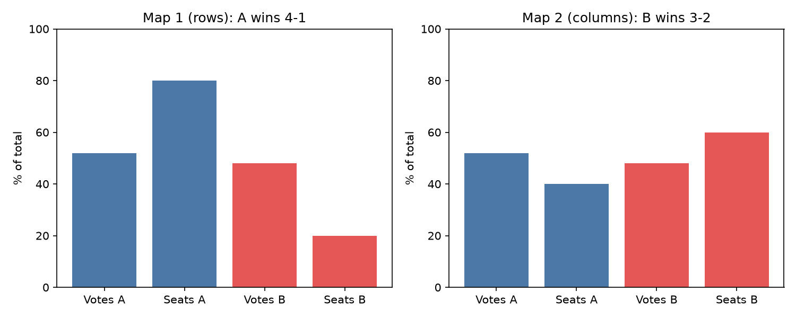
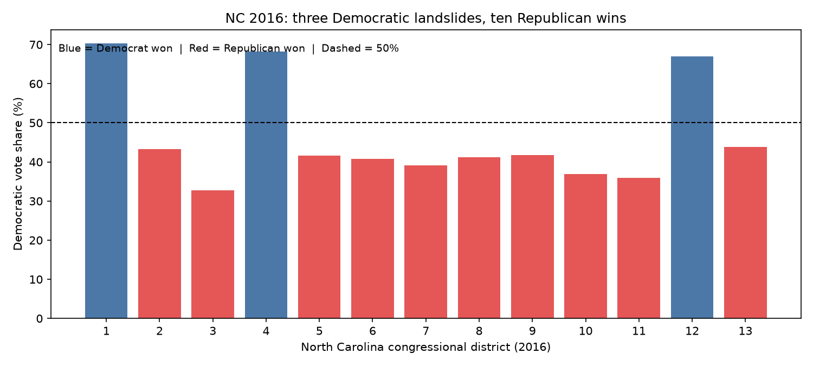
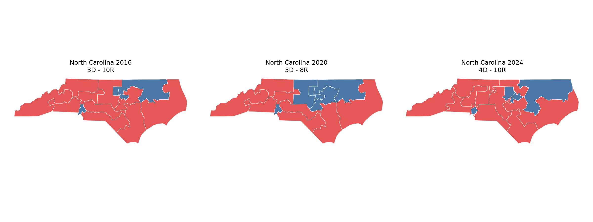
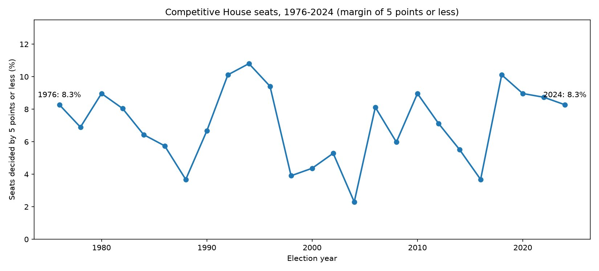
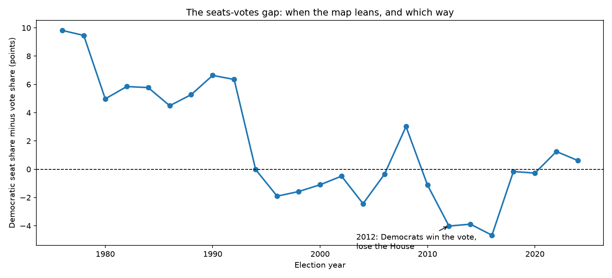
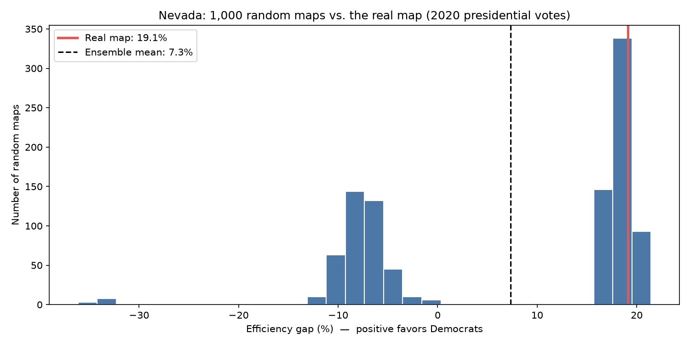

In America, voters are supposed to choose their politicians. In many districts, it's the other way around. This is that story — told with maps, numbers, and one result that surprised even me.
View the code on GitHub How to run it
Take 25 voters in a neighborhood: 13 support Party A, 12 support Party B. Now draw 5 districts two different ways — same voters, same votes. Drawn by rows, Party A wins 4–1. Drawn by columns, Party B wins 3–2. Nothing changed except the lines.
Two tricks do this work in real life. Packing stuffs your opponent's voters into one district they win by a landslide, wasting their votes. Cracking spreads them thinly across many districts they all lose narrowly. The efficiency gap measures the waste: votes above what the winner needed, plus every vote for the loser.

Same 25 voters. Rows: A wins 4–1, efficiency gap +32% (favors A). Columns: B wins 3–2, efficiency gap −16% (favors B).
The toy example is cute. This one is not. In North Carolina's 2016 congressional election, Democrats won 46.7% of the vote — and 3 of 13 seats.

North Carolina 2016: nearly half the votes, less than a quarter of the seats.
District lines get redrawn every ten years after the Census. Here is North Carolina in 2016, 2020, and 2024. Between the 2016 and 2020 maps alone, 11 of 13 districts were redrawn. Seat counts: 3D–10R, then 5D–8R, then 4D–10R — while the state's voters barely moved.

Same state, three maps. Watch the districts stretch, split, and swallow neighborhoods.
The honest finding. This project started from the popular claim that competitive seats are vanishing. Tested exactly — every House election from 1976 to 2024, "competitive" defined as a margin of 5 points or less — the share does not decline. It bounces between about 2% and 11%, spiking in wave years and collapsing in quiet ones (1976: 8.3%, 2022: 8.7%, 2024: 8.3%). A good analyst reports that, even when it breaks the story they started with.
But something real did break. The national seats–votes gap flipped: from a persistent Democratic bonus of +5 to +10 points (1976–1992) to a Republican bonus in 2012–2016 (−4.0, −3.9, −4.7) — including 2012, the "wrong-winner" House, where Democrats won the national vote and lost the chamber 201–234.

The competitive share, 1976–2024: no decline, just waves.

The seats–votes gap: the flip that actually happened.
Here's the statistical test. If a map is fair, it should look like a typical map drawn without partisan intent. So we generated 1,000 legal alternative maps of Nevada and measured each one's efficiency gap. Nevada's real map sits at +19.1%. The random maps averaged +7.3%, and 14.9% of them lean as far or further in the same direction. Verdict: a lean, not a smoking gun — and saying so is the point. Not every suspicious-looking map is a proven gerrymander.

1,000 random Nevada maps vs. the real one (red line): leaning, not an outlier.
Python (pandas, geopandas, matplotlib) in Jupyter notebooks, each one runnable free in Google Colab. Data: Princeton gerrymetrics, MIT Election Lab / Harvard Dataverse, U.S. Census TIGER/Line boundary files, and GerryChain for the ensemble. Every number is computed from public data — nothing invented — and everything that couldn't be reproduced cleanly is documented in BUILD_REPORT.md.